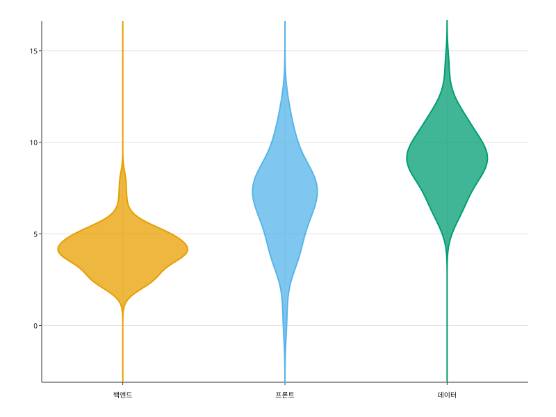
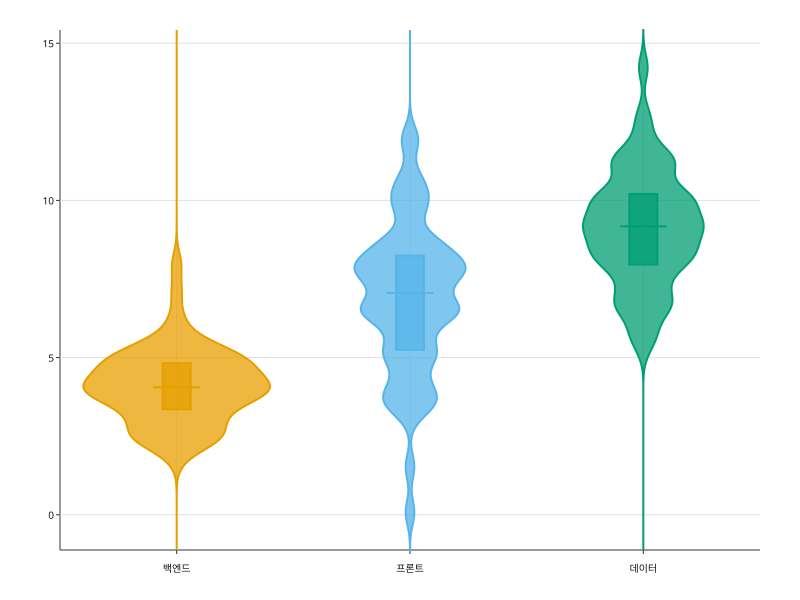

카테고리마다 좌우 대칭 밀도 곡선을 그린다. 폭이 그 값 근처에 얼마나 몰려 있는지를 나타낸다.
import random
import svgplot as sp
_rng = random.Random(11)
_teams = ["백엔드", "프론트", "데이터"]
REVIEW = {
"팀": [team for team in _teams for _ in range(60)],
"시간": (
[round(_rng.gauss(4, 1.2), 2) for _ in range(60)]
+ [round(_rng.gauss(6, 2.5), 2) for _ in range(60)]
+ [round(_rng.gauss(9, 1.5), 2) for _ in range(60)]
),
"규모": [("소" if _rng.random() < 0.5 else "대") for _ in range(180)],
}sp.violinplot(REVIEW, x="팀", y="시간")
sp.violinplot(REVIEW, x="팀", y="시간", inner=None)
sp.violinplot(REVIEW, x="팀", y="시간", bandwidth=0.4)sp.violinplot(REVIEW, x="팀", y="시간", hue="규모")